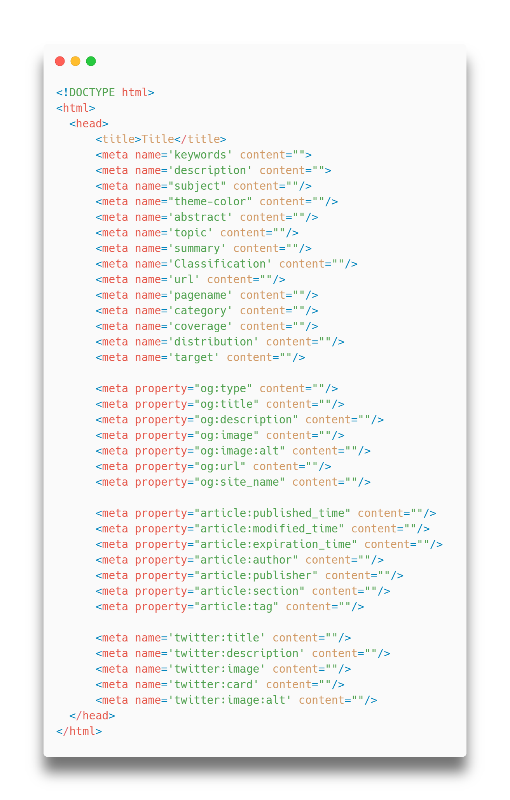

Loyae: AI For Automated SEO
The SEO Revolution | Long Gone Are The Days of Manual Site Optimization
Author: John Lins, Date: 4/4/2023

Launch Free Diagnostic Tool
For HackerNews:
The service, as of right now, is the free diagnostic tool (the AI-powered optimization service will launch in late July).
Please use the diagnostic tool and offer your feedback on the functionality and interface--any input is greatly appreciated!
We hope to keep the diagnostic tool permanently free forever.
By using the tool, you may find ways to improve your website; you are welcome to fix those issues on your own.
Such a task should be easy if your website is very small; otherwise, you are the ideal customer for Loyae!
Why SEO is important

Meta HTML tags enable search engines and web crawlers to quickly understand what your website is about and what products it offers. The data these bots collect are used for ranking websites and appropriately presenting your page to users who are most likely to be interested. The process of optimizing your site for these bots is commonly referred to as search engine optimization (SEO). Optimizing your site for SEO causes a natural influx of users without direct advertising.
Evidence suggests that users who discover web pages through search engines (and the like) are more likely to convert than through pay-per-click advertisements.
Another crucial piece of metadata is alternative (alt) text. Ideally, every image on your site should have alt text for three reasons:
- Since Google bots can’t read images, they read the image's alt text. This is used for image search and may increase traffic.
- When network issues occur, or images break, the alt text is always displayed so the user knows what was supposed to be there (that’s why it’s called ‘alternative’ text)
- Visually impaired individuals rely on alt text to read images: online–screen-readers can read the alt text aloud. This opens the doors for a new potential user base, as millions of internet users are blind.
Why manual SEO is inefficient
Manual SEO is inefficient. Hiring an SEO expert to optimize each page of your website would require that person first to understand the content on each page, construct a thoughtful meta description of said content, conduct keyword research, and write alternative text for every image presented on the site. Such a tedious task is prone to be sloppy and expensive, especially if your website hosts many blog posts and landing pages. Additionally, an SEO expert might not bother writing other non-essential meta tags such as open-graph tags, article tags, etc. The marginal increase in usability and searchability that comes from writing these tags isn’t always worth the ROTI (Return on Time Invested); these often-ignored tags can make a huge difference.
Why automate SEO with AI?
By using an automated AI-powered tool such as Loyae, human-level quality meta tags, alt data, open-graph data, and non-essential tags can be cheaply and automatically generated within minutes.
What makes Loyae easy to use?
Loyae integrates directly into your CMS. The first CMS plugin that Loyae will launch will be for Wordpress.
The Wordpress plugin will be released in July of 2023: join the waitlist to be notified on the release day.
While the final product is waiting to be launched, anyone is welcome to use our free diagnostic tool.
Technology used
(For technical readers)
Loyae uses transformer-based language and vision models to automatically generate meta descriptions, keywords, open graph tags, image alt text, and more.

Loyae is not based on any GPT models by OpenAI; however, it does use a similar transformer architecture.
Unlike GPT, which only uses encoder blocks, or BERT, which only uses decoder blocks, the model Loyae uses for metadata generation uses both encoder and decoder blocks; it is also fine-tuned for summarization which is ideal for meta description generation.
GPT is not ideal for meta tag generation because of its high likelihood of inaccurately ‘hallucinating’ based on the external data it was trained on. The model Loyae uses emphasizes the content within the webpage to a much higher degree relative to external data.
The alt text generator model uses a ViT-like transformer architecture to caption images accurately.